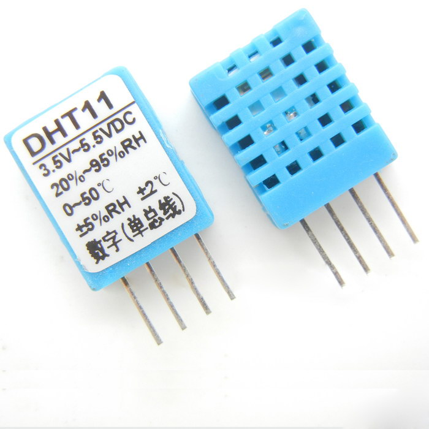
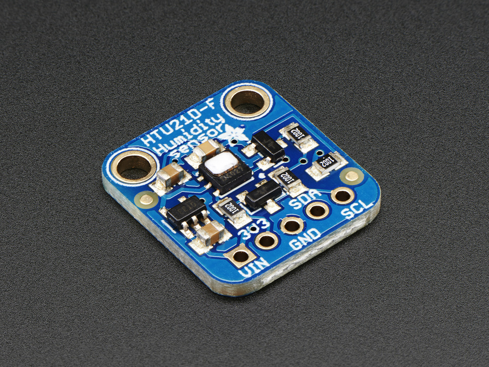

Measuring Air Humidity¶
Relative humidity (abbreviated RH) is the ratio of the partial pressure of water vapor to the equilibrium vapor pressure of water at the same temperature. Relative humidity depends on temperature and the pressure of the system of interest.
The relative humidity of an air-water mixture is defined as the ratio of the partial pressure of water vapour (H2O) in the mixture to the saturated vapour pressure of water at a given temperature. Thus the relative humidity of air is a function of both water content and temperature.
DHT11 - GPIO Humidity/Temp. Sensor¶
The DHT11 is a basic, ultra low-cost digital temperature and humidity sensor. It uses a capacitive humidity sensor and a thermistor to measure the surrounding air, and spits out a digital signal on the data pin (no analog input pins needed). Its fairly simple to use, but requires careful timing to grab data. The only real downside of this sensor is you can only get new data from it once every 2 seconds, so when using, sensor readings can be up to 2 seconds old.
More information¶
- Chinese datasheet http://www.adafruit.com/datasheets/DHT11-chinese.pdf
Where to buy¶
DHT22 - GPIO Humidity/Temp. Sensor¶
The DHT22 is a basic, low-cost digital temperature and humidity sensor. It uses a capacitive humidity sensor and a thermistor to measure the surrounding air, and spits out a digital signal on the data pin (no analog input pins needed). Compared to the DHT11, this sensor is more precise, more accurate and works in a bigger range of temperature/humidity, but its larger and more expensive.

More information¶
Where to buy¶
- https://www.adafruit.com/products/385 DHT22 $10
HTU21D - I2C Humidity/Temp. Sensor¶
This I2C digital humidity sensor is an accurate and intelligent alternative to the much simpler Humidity and Temperature Sensor - SHT15 Breakout It has a typical accuracy of ±2% with an operating range that’s optimized from 5% to 95% RH. Operation outside this range is still possible - just the accuracy might drop a bit. The temperature output has an accuracy of ±1°C from -30~90°C. If you’re looking to measure temperature more accurately, we recommend the MCP9808 High Accuracy I2C Temperature Sensor Breakout Board.
More information¶
- English datasheet http://www.adafruit.com/datasheets/1899_HTU21D.pdf
- http://randymxj.com/?p=550 - Python Library for HTU21D Humidity Sensor on Beaglebone Black and Raspberry Pi with Adafruit_I2C
- https://github.com/randymxj/Adafruit-Raspberry-Pi-Python-Code/tree/master/Adafruit_HTU21D - This library is used as source, requires Adafruit_I2C python library to work
- https://learn.adafruit.com/adafruit-htu21d-f-temperature-humidity-sensor?view=all